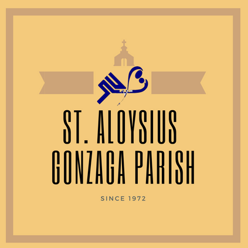

Saint Aloysius Gonzaga has several organizations that let students to serve God. Parish would like to encourage everyone to serve God regardless of what religion that you are belong to. This is to promote unitedness of one another despite of differences. Parish would like promote three values for this advocacy: Respect. Respect one another in serving God Embrace. Embrace differences of one another Love. Love one another
Religion pertains to a set of beliefs that is followed by a particular system.
Human Rights are basic principles and rights that protects every person in this world. It pertains to our freedom to do anything we want by not harming one another.
Religion prior to human rights is about freedom of choosing what religion you will be part of, same as with human rights we have basic rights about religion.
According to Ms. Christine Marie Kee an Alumni of SLU and also a volunteer of the Parish, the parish promote religion and belief in such a way that all of the organizations are free to serve but there are certain organizations that they don't allow. In the parish they welcome volunteers whether they are catholic or non-catholic and they can all serve except for the organizations that are non-catholic because according to Ms. Kee they more prefer catholic because you are already speaking the word of God and you're serving at the altar. She also mention that the parish have activities and its open to all, like when they have fellowships it's not for catholics only but also its open to non-catholics since the parish also have non-catholic member or volunteers. Where last year they had a foreign student where he's an atheist according to him yet they welcome him. In the parish, all members or volunteers have the freedom to choose their religion but still they are all welcome to serve there and to serve the Lord. Members are not force to convert to catholic but there are some volunteers who converted to catholic just to serve in the parish.